Unit 4 AOS2 – Cybersecurity
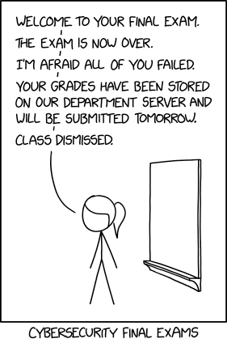
Cybersecurity is a multi-faceted field incorporating aspects of digital systems, organisational practices, threats to data and systems, law, ethics and risk management. Cyber security measures focus on protecting systems and data from a range of threats.
Goals and objectives of medium and large organisations
Can be goals and objectives of organisations (about companies main purpose: making goods and services to do X)
Goal: high level aim
Objective: specific, measurable way to achieve goal
E.g from 2017 exam (this was specific to Information systems rather than organisations)
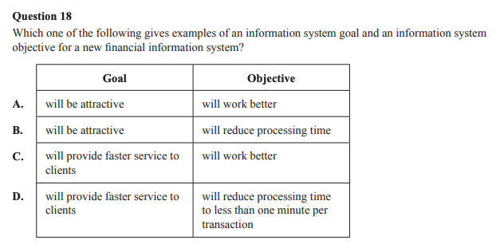
Advantages and disadvantages of developing software in-house or externally
In-house development, is using an existing team of developers within the organisation to develop software.
| Advantages | Disadvantages |
|
|
External development, is employing a third-party to complete the development of software.
| Advantages | Disadvantages |
|
|
Types of vulnerabilities and risks within insecure development environments
Use of application programming interfaces (APIs)
Description: APIs are protocols that enable different software components to communicate. If APIs are unsecured, poorly coded, or lack proper authentication, attackers can exploit them to bypass front-end security, leading to data breaches, unauthorised access, or Distributed Denial of Service (DDoS) attacks.
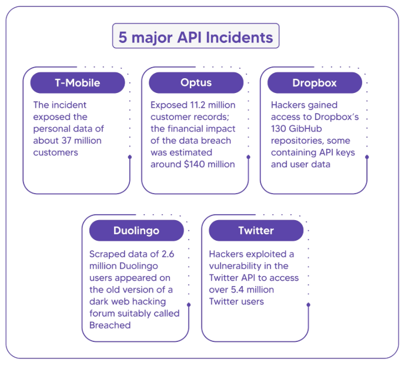
Malware
Description: Malware is a malicious software which is designed to cause harm to a system.
The study design doesn’t specify specific types of malware, but these are a common few:
- Viruses - cause a negative effect on a device
- Worms - self-replicates, frequently damages from the self-replications and use of system resources
- Trojans - hidden in legitimate software, allows backdoor access to an attacker
- Ransomware - files are encrypted and then attacker demands ransom for access again
- Spyware - collects data about a users activity i.e. keystrokes
- Denial of service - attackers prevent legitimate users from accessing a service, Distributed DOS is the same, but originates from many sources
Unpatched software
Description: Software patches make changes to software, typically involving security improvements. If software is not up to date this can leave the software more vulnerable.
Poor identity and access management practices
Description: The process of ensuring that the members of an organisation can access only the data, modules and systems required to perform their designated duties. When implemented effectively, this ensures that:
- individuals cannot access data, modules or systems beyond their needs
- staff are not granted administrator or high-level privileges (unless necessary)
- there is a decreased exposure to risk and security breaches for the organisation.
Examples of poor practices could be:
- Weak password management, i.e. not considering length, special characters etc.
- Not using multi-factor authentication
Man-in-the-middle attacks
Description: A man-in-the-middle attack secretly observes and potentially alters communications or information transfer between two parties.
This can allow them to:
- Gain access to confidential information such as private data or authentication credentials, as they are pretending to be a trusted person to communicate with
- Edit data
Strategy to protect against it:
- Only transmit private information on a secure network e.g. (specific examples are not covered by the Study Design)
- https instead of http
- Use a VPN
- Don’t connect to public WiFi networks
- Usual measure to protect against an attacker gaining user’s authentication details e.g. social engineering training, two factor authentication.
Insider threats
Description: Malicious or accidental actions from authorised users which can cause harm to a system. The impact of these actions can be data loss, stolen data, a small part of a larger attack etc.
Malicious actions
Think the guy in Jurassic park who steals the dinosaur eggs and takes down the whole company as well. This is an individual which is trusted by the company, and intends to cause them harm.
Accidental actions
This can constitute ”Social engineering” which was in the previous study design:
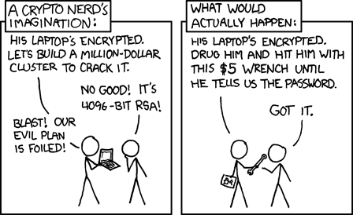
Description:
Social engineering is the art of manipulating people so they give up confidential information.
A specific type of social engineering (there are many) is Phishing,
- This is where an attacker disguises themselves as a credible entity e.g.
- A fake website that looks real, so that you submit your username and password on it.
- An email or phone call from “IT Support” that gets you to give them information, or perform actions on your computer or network
Strategy to protect against it:
- Warn and train users about the potential for social engineering, in particular not to
- click on suspicious links,
- enter authorization credentials or
- plug in unfamiliar hardware into your computer.
Cyber security incidents
Description: Cyber security incident is an event which has an impact on a business i.e. data breach, malware etc.
Risks present from software acquired by third parties
If you are utilising software from a third party you are reliant on them to ensure they have appropriate security practices and are keeping you informed of improvements/patches that need to be installed.
Third party software can introduce extra risk due to a lack of control (data) and the requirement to transmit data to the third party.
Specifically, risks can arise from:
- counterparty risk (what if the third party does something nefarious or negligent)
- unknown or uncontrollable security practices of the third party,
- lack of transparency,
- potential for security vulnerabilities in the third-party software, and
- risk of data breaches
Ways to manage these risks include:
- Working with a third party with a track record, reputation and history with other clients
- Detailing security requirements and transparency upfront in the contract
- Assigning liability to the third party in the event of a security incident in the contract
- Conducting regular security audits
- Encrypting data when transmitted
Ineffective code review practices
Description: Code review is when code is checked by a developer to check the quality or make any improvements before it is added into the codebase.
An ineffective code review may,
- Not have appropriate feedback to action
- Not included appropriate follow up
- Focus on less meaningful part of the code
- Lack context in terms of the code as a whole
Combined development, testing and production environments
Description: Environments are a dedicated workspace for a specific area of the process, such as development, testing or production.
- Environments need to be kept separate to ensure they are stable and secure
- If they are combined this means developers are working over the top of each other in the same environment and this can cause issues like down time or missing bugs
What is a development environment?
The developer's sandbox. This is where code is initially written, debugged, and tested in its earliest stages. It contains incomplete features, experimental code, and dummy data
What is a testing environment?
A server setup designed to mirror the final production environment as closely as possible (matching the same operating systems, databases, and network settings). Space to find the application's limits, to find bugs, security flaws, or performance bottlenecks. Usually a sanitized, anonymized copy of real data or realistic data. This ensures tests are realistic without putting actual customer privacy at risk.
What is a production environment?
The live application. This is the final, stable version that real users interact with (e.g., the actual public website)
Security controls used to protect software development practices and data stored within applications
Version control and code repositories
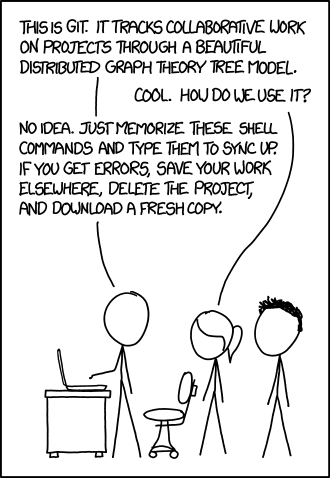
Description:
“Version control is a system that records changes to a file or set of files over time so that you can recall specific versions later.”
Version control maintains copies of the code throughout development, and that, in the event of unresolvable errors, you can facilitate a rollback to a previous working version (not a form of backup).
How does this act as a security control?
- Audit Trails: Every change in a version control system is logged with a timestamp, the exact lines of code altered, and the identity of the person who made the change. If a vulnerability or malicious backdoor is introduced, security teams can pinpoint exactly when and how it happened, and who authored it.
- Access Control: Code repositories enforce Role-Based Access Control. You can restrict who is allowed to view the code, who can propose changes, and who has the authority to approve and merge changes into the main production branch.
- Branch Protection: Repositories allow you to set up "branch protection rules." This prevents a single developer (or a compromised developer account) from pushing code directly to production. It forces all changes to go through a Pull Request (PR), requiring approval from at least one or two other developers before the code can be merged.
- Disaster Recovery and Rollbacks: If a buggy update causes an application to crash or exposes a security hole, version control allows the team to instantly revert the codebase to the last known secure state, minimizing downtime and the window of exploitation.
- Automating Security Scanning Gating: Modern repositories integrate directly into Continuous Integration (CI/CD) pipelines, which are an automated workflow that guides software from code changes to production. Every time code is pushed, automated tools check for vulnerable open-source dependencies and other issues i.e. SonarQube. Vulnerable code can be blocked automatically from merging.
- Preventing Data Leaks: Centralized repositories utilize automated scanning engines to intercept hardcoded sensitive values—such as API keys, cryptographic tokens, database credentials, and SSH keys. Catching these during the commit phase prevents malicious actors from harvesting credentials to access live application databases.
| Benefits of version control: | |
| |
| Dangers of not using version control: | When to use version control: |
|
|
Robust identity and access management
Description:
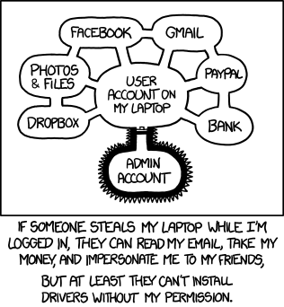
A system using user authentication restricts what users are able to see or do until their identity is confirmed.
Robust identity and access management would protect a development environment by authenticating a developer’s identity or restricting the developer’s access to the code and data as a product of the software being developed within the environment.
This can be more than just a username and password e.g.:
- Something you know: username, password, pin
- Something you have: RFID chip, key fob, smart phone, USB stick, authentication app on a phone
- Something you are: biometrics e.g. fingerprint, face, retinal scan
How does this act as a security control?
- Authentication (Who are you?): It verifies that a user, device, or software application is exactly who they claim to be.
- Authorization (What can you do?): Once identity is proven, IAM checks the rulebook to see what files, databases, or applications that specific identity is allowed to access.
- Accounting/Auditing (What did you do?): IAM logs every login attempt, access request, and permission change. This creates an immutable audit trail used for detecting anomalies and proving regulatory compliance.
Two-factor authentication is where there are multiple points that have to authenticate a user e.g. login plus a code messaged to your phone.
Multi-factor authentication is the general term for when two or more points of authentication are used.
| Benefits of Robust identity and access management: | |
| |
| Dangers of not using Robust identity and access management | When to use Robust identity and access management: |
|
|
Encryption
Description:
Encryption is the process of transforming information into a coded form, so that it is unreadable without deciphering. Ideally this ability to decipher the coded information is only available to authorised users.
How does this act as a security control?
- Encryption acts as a primary defense for confidentiality. If data is encrypted, even if an attacker gains access to the data they will not be able to read it (at least not easily).
| Benefits of encryption: | |
| |
| Dangers of not using encryption: | When to use encryption: |
|
|
Code review
Description: A code review is when a developer/s checks through the code to maintain quality.
By utilising code reviews you can,
- Improve quality of the code
- Use multiple reviewers to more thoroughly check code
- Ensure code uses current security practices
- Can catch errors before deploying
How does this act as a security control?
- They prevent a single point of failure (a solitary developer making a mistake) by requiring a second set of eyes to actively search for security flaws i.e. hardcoded passwords, logic errors, etc, before the new code is permitted into the live production environment.
| Benefits of code reviews: | |
| |
| Dangers of not using code reviews: | When to use code reviews: |
|
|
Regular updates and patches to software
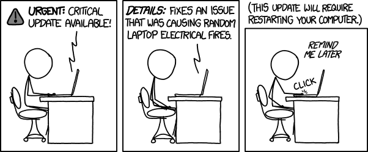
Description:
Software updates are changes to a software products, usually to:
- change the program’s features,
- fix bugs or
- fix security vulnerabilities.
How does this act as a security control?
- Patching directly reduces the software's attack surface. When software vendors discover security flaws (vulnerabilities), they release patches to close those specific loopholes. Applying these patches acts as a control by proactively blocking known exploit methods that hackers actively use to compromise systems.
When to use it:
Update your software:
- Regularly
- Reasonably close to when updates are released, keeping in mind that updates themselves may introduce bugs and security issues.
Organisational plans for software updates usually involve:
- Designating someone to be responsible for them
- Doing them at regular intervals e.g. every 2 weeks, quarter.
- A testing process in a non-production environment (i.e. not shown to users) to test updates before implementing them.
| Benefits of regular updates and patches to software: | |
| |
| Dangers of not using regular updates and patches to software: | When to use regular updates and patches to software: |
|
|
Separated development, testing and production environments
Description: Maintaining distinct, isolated servers/workspaces for different stages of the software lifecycle.
How does this act as a security control?
- Separation of environments acts as a control through isolation (segmentation). It physically or logically separates experimental workflows from live business operations. This ensures that developers do not have direct access to live, sensitive customer data (protecting confidentiality), and ensures that untested, potentially unstable code cannot inadvertently crash the live application (protecting availability).
| Benefits of separated environments: | |
| |
| Dangers of not using separated environments: | When to use separated environments: |
|
|
Threat modelling principles
Threat modeling works to identify, communicate, and understand threats and mitigations within the context of protecting something of value. (OWASP) There are a few different types of models used i.e. STRIDE.
Defining security requirements
What is needed in terms of security for the system.
- What needs to be protected/What are we working on?
- What can go wrong? (what threats exist to the system)
- What are we going to do about it? (what mitigations are we going to use?)
- Did we do a good job? (continuous checking to the plans)
(OWASP)
Identifying and mitigating threats
Security threats are the actions, devices and events that threaten the integrity and security of data and information stored within, and communicated between, digital systems. The threats can be:
- Accidental: deletion or overwriting of data, misdelivery of information and unintended equipment damage
- Deliberate: insider threats, unauthorised access, theft of data or physical devices, malware, denial of service attacks and social engineering
- Events-based: natural disasters and environmental factors, power or network outages, hardware failures and data corruption.
Mitigations are required for each of these threats.
Confirming threats have been mitigated
It is important to ensure you continue to check the system to ensure the threats identified have been mitigated appropriately.
- Security audits - assess security as a whole for the organisation and determine anywhere which needs to be improved
- Security assessments- identifies new issues in the system to be address
- Monitoring and logging - system logs help determine if there have been any threats to the system
Other options include, patch management, access control reviews, training, intrusion detection and prevention
Criteria for evaluating the security of software development practices within an organisation
Examples of criteria include:
- Software is updated to the latest version each month.
- Users have to log in to gain access to non-public information.
- Passwords have a minimum character length.
Key legislation and industry frameworks
Copyright Act 1968 (Cwlth)
Essential Eight
The Australian Signals Directorate (ASD) has developed prioritised mitigation strategies, in the form of the Strategies to mitigate cybersecurity incidents, to help organisations protect themselves against various cyberthreats. The most effective of these mitigation strategies are the Essential Eight.
The Essential Eight has been designed to protect organisations’ internet-connected information technology networks.
The mitigation strategies that constitute the Essential eight are:
| EE | What? | How does it help? |
| Application Control (Applications and APIs) | This involves creating a "whitelist" of approved software applications, executables, and scripts. If an application is not on the approved list, it is blocked from running. | It stops unapproved or malicious programs (like ransomware or spyware) from executing on company devices. |
| Patch Applications | Applying updates to software applications (like web browsers, PDF viewers, or IDEs used by developers) as soon as patches are released by vendors. | Attackers exploit known security vulnerabilities in older software versions. Patching closes these backdoors. |
| Restrict Microsoft Office Macros | Macros are small programs written to automate tasks in Microsoft Office, but attackers frequently use them to download malware when a user opens an infected document. | Restricting macros ensures that only trusted, internally vetted macros can run, preventing email phishing attachments from executing malicious code. |
| User Application Hardening | Disabling unnecessary features in applications that are commonly exploited (e.g., disabling Flash, Java, or third-party web browser extensions). | It reduces the "attack surface" of the application, giving hackers fewer vulnerabilities to target. |
| Restrict Administrative Privileges | Only users who specifically need administrator rights to do their jobs (like IT staff) should have them, and they should use standard accounts for everyday tasks like reading emails. | If a standard user's account is compromised, the attacker cannot easily install malware or change system-wide security settings. |
| Patch Operating Systems | Regularly updating the core operating system (e.g., Windows, macOS, Linux) of workstations and servers. | Just like patching applications, updating the OS fixes core vulnerabilities that attackers could use to take full control of a machine. |
| Multi-Factor Authentication (MFA) | Requiring users to provide two or more forms of identity verification before granting access (e.g., a password plus a code sent to a mobile app). | If an attacker steals a user's password, they still cannot access the system without the secondary physical device. |
| Regular Backups | Frequently copying essential data, software, and configuration settings, and storing these copies offline or offsite.. | If the organisation is hit by ransomware or a malicious insider deletes crucial files, the data can be restored from the backup without paying the ransom or permanently losing the information |
The Essential Eight is implemented in maturity models which are designed to assist organisations to implement the Essential Eight in a graduated manner based upon different levels of malicious actors’ tradecraft (i.e. tools, tactics, techniques and procedures) and targeting.
Information Security Manual (ISM) Guidelines for Software Development
The ISM has been updated since the study design was published, so these headings have been altered since, if you look in the ISM they are phrased differently. The text below is from the March 2024 version.
- Development, testing and production environments
Segregating development, testing and production environments, and associated data, can limit the spread of malicious code and minimises the likelihood of faulty code being introduced into a production environment. Furthermore, protecting the authoritative source for software is critical to preventing malicious code being surreptitiously introduced into software.
- Secure software design and development
The use of secure-by-design and secure-by-default principles, memory-safe programming languages (such as C#, Go, Java, Ruby, Rust and Swift), and secure programming practices, that are supported by agile software development practices and threat modelling, are an important part of application development as they can assist with the identification and mitigation of at risk software components and risky programming practices. In addition, providing mechanisms to assist in determining the authenticity and integrity of applications, while configuring them in a secure manner, can assist with software supply chain security activities.
- Application security testing
Application security testing can assist software developers in identifying vulnerabilities in their applications. In doing so, both static application security testing, as well as dynamic application security testing, should be performed in order to achieve comprehensive test coverage. Furthermore, software developers may choose to use an additional independent party to assist with removing any potential for bias that might occur when they test their own applications.
Privacy Act 1988 (Cwlth) (APP 1, 6, 8, 9, 11)
Privacy and Data Protection Act 2014 (IPP 1, 2, 4, 5, 9)
Ethical issues
Ethical issues are issues that arise that challenge moral standards, principles or expectations and that can impact individuals and/or organisations.
All the ethical issues outlined in the Study design also have a legal aspect - make sure you are talking about ethical issues if that is the question.
- Ineffective security practices
If ineffective security practices are being utilised, then that potentially leaves the system open to compromise. What does this mean in terms of any confidential data which is being stored for example? What is the ethical responsibility of developers?
- Use of artificial intelligence during development
When using AI in development, issues could be introduced in the code or data could be compromised. The AI model could have bias towards certain groups in its output. What does this mean in terms of an output and its fairness?
- Intellectual property
Intellectual property refers to creations of the mind, such as software algorithms and designs.
If code is only used by those that first create it, then a monopoly can be made and development and collaboration is more complex, however IP still needs to be respected.
- Copyright issues
Although code is copyrighted, ideas aren’t so ideas could be used if they have not been implemented.
The Exam may describe a situation and will ask you to “describe the ethical issue with...”.
- Ethical dilemmas are not just a problem.
- An ethical dilemma is a choice between two options both of which have some reason to be desirable.
- One of the options may seem to you like the obvious “right” thing to do, but there should still be a pull in both directions.
To answer exam questions, they are keen to see you discuss the merits of both sides. You can’t just say “well obviously you shouldn’t host intrusive pop up ads”, you need to discuss why the company might be tempted.
Mitigation measures to reduce or eliminate threats, vulnerabilities and risks
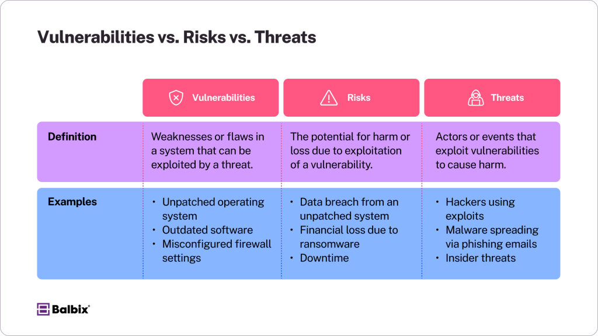
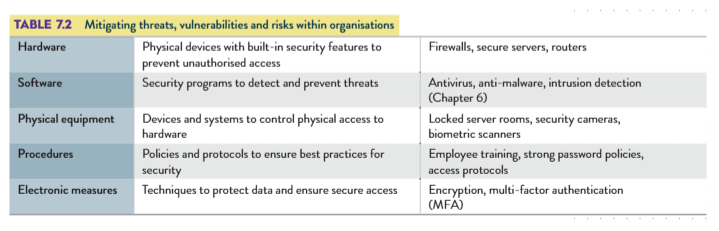
Software Development VCE Units 3 & 4 by Gary Bass et al.
Not too sure what is wanted here, these are some mitigations for each of the vulnerabilities and risks in development environments:
| Vulnerabilities and risks | Mitigations |
| Use of application programming interfaces (APIs) |
|
| Malware |
|
| Unpatched software |
|
| Poor identity and access management practices |
|
| Man-in-the-middle attacks |
|
| Insider threats |
|
| Cyber security incidents |
|
| Risks present from software acquired by third parties |
|
| Ineffective code review practices |
|
| Combined development, testing and production environments |
|
From previous study design, Q14 2020 Case Study:
- software auditing and software security testing
- identification of weaknesses and risk of exploitation such as vulnerability and penetration
- testing, white hat hacking
- compliance checking in relation to the use of third-party software
- version control.
Strategies for improving the security of software development practices
Onboarding/induction practices and developer training focused on secure development
New employees need to be taught best practices that are followed by the company to ensure they are implementing the appropriate practices.
Employees will have habits and practices from previous employers, so it is important that everyone knows the company practices and is taught them when joining the company. This ensures consistency across employees.
When joining a company there may be a few days of formal induction and/or a mentorship program to support new employees.
Ongoing training and awareness of best cybersecurity practices is important for developers i.e. online cybersecurity courses, training to build awareness of new trends.
Development of risk management plans
A risk management plan documents possible risks, minimisations, contingency plans.
- Identify risks - what risks are there? I.e. natural disaster, power loss
- Assess the risks - severity/impact and likelihood of each risk
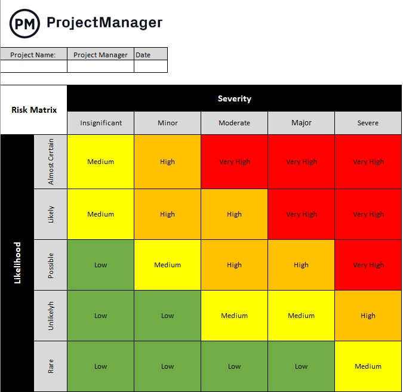
- Minimise or eliminate risks - implement strategies to reduce risk where possible
- Assign responsibility - who is responsible for what when a crisis occurs
- Develop contingency plans - how to continue operations if a crisis occurs
- Communicate the plan and train staff - make sure people are aware of the plans
- Monitor for new risks - make sure to review the plan and identify new risks
PRIOR TO 2025 STUDY DESIGN CONTENT
Software security and data security vulnerabilities
Data breaches
Description:
A data breach occurs when any private information is either accessed or disclosed without authorization, or lost.
Strategy to protect against it:
- Make sure that private data storage and transmission is protected by:
- Authentication
- Encryption
- Controlling physical access to hardware that stores data e.g. server
Web application risks
Cross-site scripting (XSS)
Description:
A cross-site scripting attack injects code into a website that a user accesses, so that when you go to e.g. twitter.com you are also loading Javascript code that will run in your browser, that does something malicious.
Cross-site scripting attacks:
- Involve client-side code, so on web usually Javascript
- Abuse the fact that we trust all code originating from a website as if it belongs to that website - most websites make you download and run Javascript code to use the website, and the browser won’t distinguish between what the website should have vs. extra malicious code.
- When successful can do things such as:
- Gain access to authentication stored in cookies, and thereby impersonate the user to the website. This is especially problematic if you can impersonate an admin for the site.
- Alter the website e.g. change link or form submission locations.
Specific examples are described in detail here.
Strategies to protect against it:
- Validate user input.
- Sanitise user inputs i.e. replace < and > characters to avoid HTML/JS injection.
- Only import trusted libraries
SQL injection
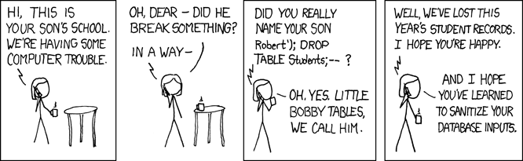
Description:
A SQL injection is:
- “a web security vulnerability that allows an attacker to inject/insert SQL into a web application via an input field
- gives the attacker the ability to access, edit, insert and delete data that they would normally not have access to.”
(definition from 2022 VCAA exam report)
This could let an attacker:
- Read, alter or destroy data
- Gain access as an admin on the database server
Strategy to protect against it:
- Validate user input.
- Sanitise user inputs e.g. use SQL parameters (variables)
Managing risks
Auditing and testing strategies to identify and minimise risks
See above
Minimising security vulnerabilities to software development practices
See above
Data integrity
The 6 characteristics of data integrity (RATCAR) are:
| Definition | Impact if data does not have this: | |
| Reasonableness (Validity, Consistency) | Is the data valid?
| Data may be integrated incorrectly, leading to incorrect deductions. |
| Accuracy | The data is correct at a level or degree of accuracy e.g. a number rounded off loses some accuracy | Deductions based on data will be wrong. |
| Timeliness | Is the data:
| Deductions based on data will be wrong. Decisions won’t be made quickly enough. |
| Correctness | Whether something is right or wrong. | |
| Authenticity (Credibility, Reliability) | How much do we trust this data? | Deductions based on data will be wrong. |
| Relevance | Is this data really needed? | Expensive to store and maintain. |
NB: the more common term for what VCAA called Data Integrity appears to be Data Quality.
The Health Records Act 2001
Federal or state? Victoria only
Who does it apply to:
- Health service providers (e.g. doctors, dentists, pharmacists)
- Any other organisation in Victoria (public or private) who collects, holds or uses “health information”.
- E.g. schools, gyms, insurers, employers, researchers, etc.
- But not individuals about their own or their family’s health information.
What do they mean by “health information”?
It is information about a person’s:
- Health (physical, mental, disability)
- Preferences about future provision of health e.g. “do not resuscitate”
- Services provided to them e.g. they are in physical rehab or getting therapy
- Genetic information
- Other information created in the course of providing a health service
Comparing the IPPs to the HPPs
- The first 9 principles are mostly the same.
- Specific health-related notes are added in the table below.
- There is no equivalent to IPP 10 “Sensitive Information”, and HPP 10 and 11 are specific to health information only.
The 11 Health Privacy Principles are:
A comparison with the IPPs is found here.
| Differences from the IPPs | |
| N/A |
| N/A |
| Beyond keeping data accurate, complete and up-to-date, it must also be relevant to the organisation’s functions or activities. |
| Covers retention as well. Usually organisations must destroy or permanently de-identify health information if it is no longer needed. However, HPP 4 states that health service providers must retain health information for the period of time set out in the Act before deleting. All other holders of health information must destroy or permanently de-identify health information if it is no longer needed. |
| N/A |
| Updated information is added, with the previous information retained due to retention provisions in HPP 4. |
| Only assign identifiers, such as patient identification numbers, to individuals if this step is reasonably necessary. |
| N/A |
| N/A |
| If a health service provider is sold, transferred or closed down, and the provider is no longer there, it must notify its current or former clients via a public notice. |
| Upon request from an individual, a health service provider must make information about that individual available to another health service provider. |